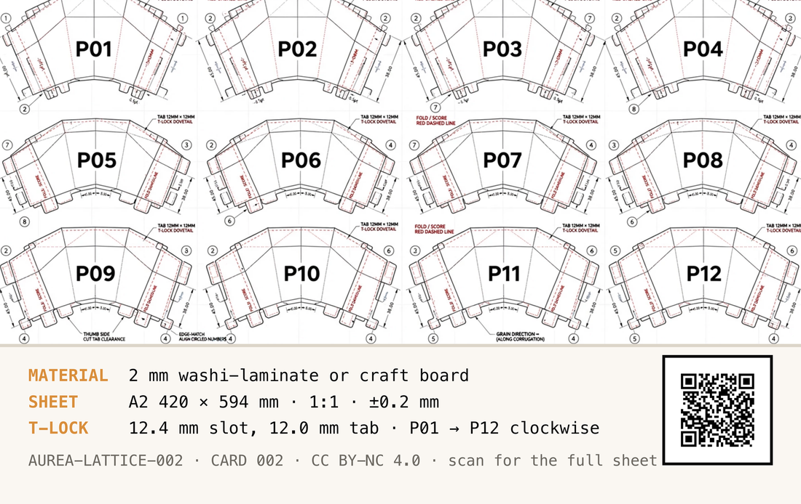

What it is
A bracer you wear on your forearm. Twelve flat panels, cut from one A2 sheet at full size, lock into each other with tabs and close into a ring around your wrist. Above the ring the panels are pleated, and the pleats open into a fan that stands over your arm. Nothing is glued and nothing is screwed. The tabs hold it.
In sun, the open fan puts a band of shade down your forearm. That is what it is for. Folded shut it is a flat cuff.
It weighs about 78 g finished. The grain of the material runs the long way down each panel, which is what lets the ring flex around your hand instead of cracking across it.
- SHEET
- A2 · 420 × 594 mm · 1:1, in millimetres
- PANELS
- 12 · assembled clockwise, P01 → P12
- LOCK
- T-lock dovetail · 12.0 mm tab into a 12.4 mm slot
- TOLERANCE
- ±0.2 mm
- MATERIAL
- 2 mm washi-laminate, or 2 mm craft cardboard
- GRAIN
- lengthwise, so the ring flexes
- WEIGHT
- about 78 g finished
- HARDWARE
- none · no glue needed
- DRAWING
- ORI-WCB-012, rev 01
Two materials are listed because this card has two sources and they say different things. The written spec says washi-laminate; the drawing says craft cardboard. At 2 mm they cut and fold the same, so both are named rather than one quietly dropped.
How to build it
AN AFTERNOON. LONGER IF YOU SCORE EVERY PLEAT BY HAND
-
Print the template at true scale
The sheet is drawn 1:1 in millimetres on A2, 420 × 594 mm. Print it at 100% / “Actual size”. No home printer takes A2, so tile it across A4 or Letter and trim the overlap — every print dialogue can do this, and the tiles line up because the drawing is dimensioned, not fitted.
“Fit to page” is the one setting that ruins this. It shrinks the sheet by a few percent, which is invisible on paper and fatal in the tabs: at 97% a 12.0 mm tab is 11.6 mm and every joint is loose.
-
Check the ruler before you cut anything
There is a 10 cm ruler printed on the sheet for exactly this moment. Put a real ruler on it. It must measure 100 mm. If it does not, the print scale is wrong — change the setting and print again. This is thirty seconds against a whole A2 sheet and an afternoon.
-
Cut every solid black line through
Solid black is a cut. Take the blade all the way through the material, one panel at a time. A craft knife is enough; a laser cutter is faster. Keep the offcuts until the dry-fit is done — a torn tab can be patched from a scrap of the same sheet.
-
Score the red dashed lines — do not cut them
Dashed red is a fold. Score it about halfway through the material on one face only, then valley-fold 180° so the two faces come together. These scores are what turn a flat panel into the curve of the canopy, so there are a lot of them. An unscored fold in 2 mm stock bulges and fights the tabs for the rest of the build.
-
Keep the grain arrows pointing the same way
The arrows on the panels are grain direction, and the sheet asks for the grain to run lengthwise — along the corrugation, if you are using corrugated board. That is what lets the finished ring flex around your hand rather than crack across it. Lay every panel on the sheet with its arrow the same way before you cut.
-
Match the circled numbers, edge to edge
Each edge carries a circled number, 1 to 8. An edge joins the edge with the same number on the panel next to it. The numbers repeat around the ring, so work in order — the partner you want is always on the panel already in your hand.
-
Dry-fit clockwise, P01 through P12
Slide each 12.0 mm tab into its 12.4 mm slot, going clockwise, P01 first and P12 last, until the ring closes. The order matters: later panels close over earlier joins, and a ring assembled out of order has a tab you can no longer reach. Work with your fingers, not a mallet — if a tab will not seat, the fold above it is not fully closed.
12.0 TAB 12.4 SLOT A 12.0 mm tab in a 12.4 mm slot leaves 0.4 mm, and that gap is the whole fit: tight enough to hold by friction, loose enough to seat by hand.
-
Test-fit before anything permanent
It holds dry — that is the design, and the sheet says to test-fit the tabs before final assembly. Glue is a choice you make after the whole bracer has been closed once and worn once, because glue is the step with no undo and the dry-fit is where you find out a panel is mirrored. PVA on board.
Reading the sheet
FOUR MARKS, AND THEY MEAN DIFFERENT THINGS
The tab and the slot are the other two marks on the sheet. They are drawn to scale in step 07, which is a better place for them than a swatch this size.
Where the images come from
The front image is a generated render. It shows a forearm and a hand wearing the finished bracer. There is no face in it and no identifiable person. It was made by an image model (run PB-48-14-09), not photographed. You cannot tell that by looking, which is the entire reason it is written here on the page a stranger reads rather than only in a metadata file next to it.
The back is the fabrication template. Drawing ORI-WCB-012, rev 01: 1:1, in millimetres, with cut lines, fold lines, tabs, slots, edge numbers and its own calibration ruler. If the render and the sheet ever disagree about this object, the sheet is right — the render is a picture of it, the sheet is the thing.
They do disagree, in one place, so here it is plainly. The render shows small brass hinges at the cuff and amber beads on pins at the fan ribs. The sheet has neither. The tabs do that job, and there is no hardware in this build. Cut from the sheet, not from the picture.
Licence
The design — the panel geometry, the sheet, the card art — is CC BY-NC 4.0. Cut it, remix it, print it for yourself, teach a class with it, put it on a stage: credit it, and do not sell it. The code in the vibe-cards repository is MIT and is not affected by this; two different things, two different grants, and the page that hands you the file is the right place to say so.
vc1|AUREA-LATTICE-002|Aurea Lattice 02|2026-08|CC-BY-NC-4.0|vibe-cards
The chip carries that line in plaintext, next to the address. It needs no server and no network to say what this card is — so if this page ever dies, the card still knows.
PRINT IT YOURSELF — this card is a template in Card Studio, the same free app that printed the original. It opens holding this card, both faces.
The log
This card’s address can never change, so anything new about it has to land here: corrections, a fold order that turned out to be better, a material someone tried that worked. Tap the card again in a month and there should be something on this page that is not on it today.
Want it changed?
Ask for anything. A mirrored version for the other wrist, a bigger or smaller ring, a sheet already tiled onto A4 so there is nothing to trim, fewer pleats, a canopy that folds flat against the arm, 3 mm board instead of 2. Whatever would make it work for you.
No account, no email, nothing to sign up for. Just write and tap. It goes into a queue someone works through, not into an inbox.